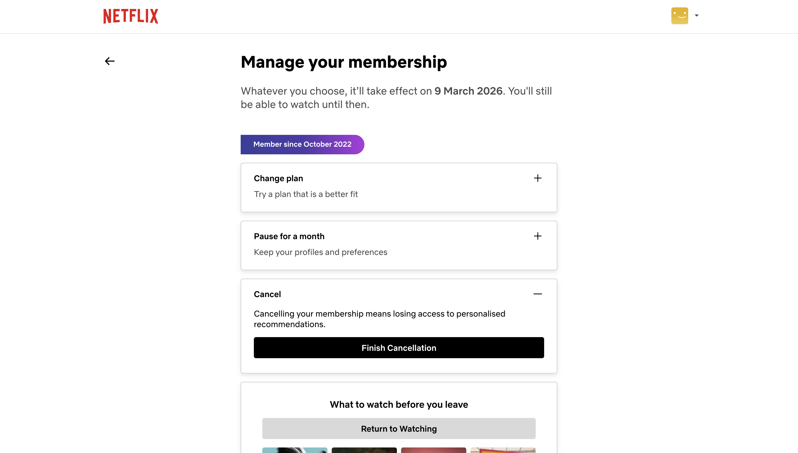

Roach Motel
What is the dark pattern?
It’s easy to get in, but painfully hard to get out. Users can sign up, subscribe, or add an account in seconds, yet canceling or deleting requires hidden menus, extra steps, or customer support hurdles
Example
A streaming service lets you sign up in two clicks, but canceling requires navigating multiple hidden screens or calling customer support.
Why is it harmful?
The roach motel pattern removes a user’s ability to freely leave a product or service. It exploits inertia and frustration rather than genuine satisfaction, turning what should be a reversible decision into a psychological and logistical burden. Users feel tricked when the effort to exit is deliberately higher than the effort to enter, which can create financial harm and long-term resentment. Over time, this pattern damages brand credibility because people realize the relationship is being enforced through friction instead of value.
What is the Ethical Alternative?
Make exiting as easy as entering. Example: A “Cancel subscription” button on the account homepage with a clear one-step confirmation and no guilt-tripping messages.
Design principles to prevent it:
Design for reversibility and user autonomy. Critical actions like canceling, deleting accounts, or opting out should be visible, reachable, and comparable in effort to sign-up flows. Use the principles of transparency and parity—if a process takes one step to begin, it should take one step to end. Measure success by long-term trust rather than short-term retention metrics.